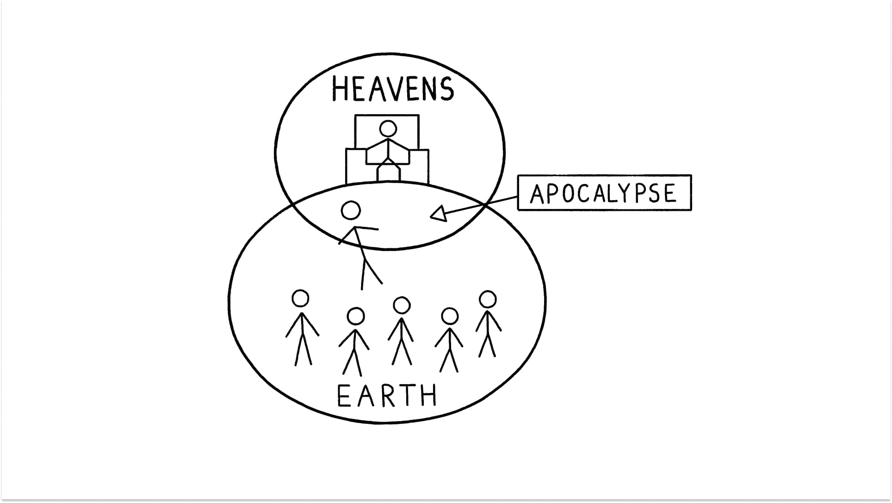

Sessão 3: O Apocalipse de PauloSession 3: Paul’s Apocalypse
Principais LiçõesKey Takeaways
- Segundo a Bíblia, Céu e Terra são realidades distintas, mas não separadas.According to the Bible, Heaven and Earth are distinct but not separate realities.
- Um apocalipse é quando o vínculo entre Céu e Terra se torna visível para nós.An apocalypse is when the bond between Heaven and Earth becomes visible to us.
- Paulo experimenta seu próprio apocalipse quando Jesus se revela como o Messias ressuscitado e o chama para compartilhar essa revelação com outros. Esse encontro é fundamental para o livro de Efésios.Paul experiences his own apocalypse when Jesus reveals himself as the risen Messiah and calls Paul to share this revelation with others. This encounter is foundational to the book of Ephesians.
- Efésios é um convite a experimentar o Jesus ressuscitado e permitir que esse apocalipse nos transforme.Ephesians is an invitation to experience the risen Jesus and allow that apocalypse to transform us.
Os Céus e a TerraThe Heavens and the Earth
Na cosmovisão bíblica, os céus e a terra são distintos, mas não separados. Quando Paulo encontra Jesus (Atos 9:1-6, 22:6-7, 26:13-18), Deus revela esse vínculo entre Céu e Terra a Paulo de um modo que transforma suas pressuposições sobre o que Deus está fazendo no mundo.In the biblical worldview, the heavens and the earth are distinct but not separate realities. When Paul encounters Jesus (Acts 9:1-6, 22:6-7, 26:13-18), God reveals this bond between Heaven and Earth to Paul in a way that transforms his assumptions about what God is doing in the world.

Pergunta de ReflexãoReflection Question
Segundo a cosmovisão bíblica, Céu e Terra são espaços distintos? Por que isso é importante para entender um apocalipse bíblico?According to the biblical worldview, are Heaven and Earth distinct spaces? Why is this important for understanding a biblical apocalypse?